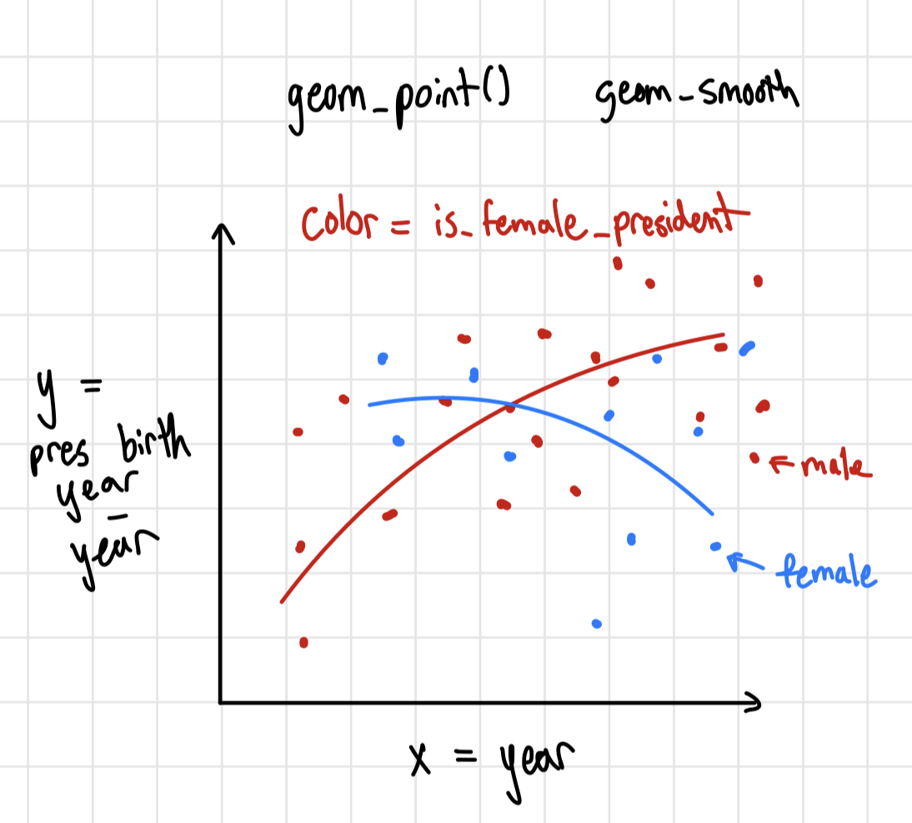
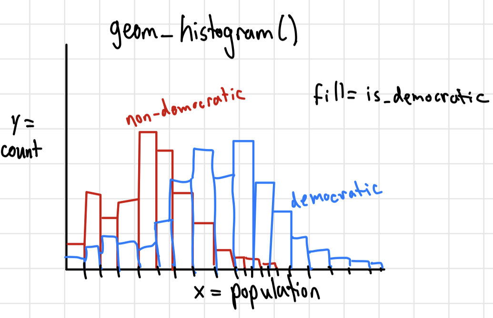

Code
library(tidyverse)
democracy_data <- readr::read_csv('https://raw.githubusercontent.com/rfordatascience/tidytuesday/main/data/2024/2024-11-05/democracy_data.csv')library(tidyverse)
democracy_data <- readr::read_csv('https://raw.githubusercontent.com/rfordatascience/tidytuesday/main/data/2024/2024-11-05/democracy_data.csv')The dataset is read in from Tidy Tuesday on GitHub and was curated by Jon Harmon. This dataset is an updated version of the pacl dataset, described in J. A. Cheibub, J. Gandhi, and J. R. Vreeland. “Democracy and Dictatorship Revisited”. In: Public Choice 143.1-2 (2009), pp. 67-101. DOI: 10.1007/s11127-009-9491-2.
The data describes the regime types of countries around the world between the years 1950 and 2020. Each observation (row) is a country and year and contains information about that country’s government regime in said year. Many of the variables recorded are booleans that indicate the political system or political rights of the country such as is_communist or is_presidential.
These data is important to measure and evaluate the differences across regimes, and evaluate changes in democracies on a global scale.
The cleaning script for the data is in the code chunk below. The orginal pacl data is being cleaned and updated in this script.
# Data from the package {democracyData}
# install.packages("pak")
# pak::pak("xmarquez/democracyData")
library(democracyData)
library(tidyverse)
democracy_data <-
democracyData::pacl_update |>
janitor::clean_names() |>
dplyr::select(
"country_name" = "pacl_update_country",
"country_code" = "pacl_update_country_isocode",
"year",
"regime_category_index" = "dd_regime",
"regime_category" = "dd_category",
"is_monarchy" = "monarchy",
"is_commonwealth" = "commonwealth",
"monarch_name",
"monarch_accession_year" = "monarch_accession",
"monarch_birthyear",
"is_female_monarch" = "female_monarch",
"is_democracy" = "democracy",
"is_presidential" = "presidential",
"president_name",
"president_accesion_year" = "president_accesion",
"president_birthyear",
"is_interim_phase" = "interim_phase",
"is_female_president" = "female_president",
"is_colony" = "colony",
"colony_of",
"colony_administrated_by",
"is_communist" = "communist",
"has_regime_change_lag" = "regime_change_lag",
"spatial_democracy",
"parliament_chambers" = "no_of_chambers_in_parliament",
"has_proportional_voting" = "proportional_voting",
"election_system",
"lower_house_members" = "no_of_members_in_lower_house",
"upper_house_members" = "no_of_members_in_upper_house",
"third_house_members" = "no_of_members_in_third_house",
"has_new_constitution" = "new_constitution",
"has_full_suffrage" = "fullsuffrage",
"suffrage_restriction",
"electoral_category_index" = "electoral",
"spatial_electoral",
"has_alternation" = "alternation",
"is_multiparty" = "multiparty",
"has_free_and_fair_election" = "free_and_fair_election",
"parliamentary_election_year",
"election_month" = "election_month_year",
"has_postponed_election" = "postponed_election"
) |>
dplyr::mutate(
election_month = dplyr::na_if(.data$election_month, "?")
) |>
tidyr::separate_wider_regex(
"election_month",
patterns = c(
election_month = "\\D+",
election_year = "\\d{4}$"
),
too_few = "align_start"
) |>
dplyr::mutate(
electoral_category = dplyr::case_match(
.data$electoral_category_index,
0 ~ "no elections",
1 ~ "single-party elections",
2 ~ "non-democratic multi-party elections",
3 ~ "democratic elections"
),
.after = "electoral_category_index"
) |>
dplyr::mutate(
election_month = stringr::str_squish(.data$election_month),
dplyr::across(
c(
tidyselect::ends_with("_index"),
tidyselect::contains("year"),
tidyselect::ends_with("_members"),
"parliament_chambers"
),
as.integer
),
dplyr::across(
c(
tidyselect::starts_with("is_"),
tidyselect::starts_with("has_")
),
as.logical
)
)The first section of the data cleaning process selects 41 columns from the pacl dataset, after using janitor package to clean the names of the variables. In this select statement, the majority of the columns are renamed to a more informative column name. Most of the logical data types (True or False) get the added is_ or has_ prefix and the other renamed columns add useful variable information such as monarch_accession_year instead of monarch_accession.
The next section of cleaning mutates the variables. The “?” value in election_month is replaced with NA’s. election_month is split into two columns, on for the month and one for the year of the election (originally in the same variable). election_month also has the whitespace removed. A new character variable, electoral_category is created using the definitions from the electoral_category_index.
Lastly, any of the of the index, year, or members variables along with parliament_chambers are converted to integer datatypes. Then, all the is_ or has_ variables are converted to logical datatypes.
How has president age changed over time and is there a difference for female presidents vs. male presidents?
How long on average does it take countries that stopped being democratic to return to democracy?
How does happiness score differ by regime type? Is there a difference in happiness between different types of democratic regimes?
Do more educated countries have more democratic regimes?
How does the distribution of populations compare between democratic and non-democratic countries.
For RQ 1 from these Data

For RQ 3 from supplemental data
